making a chip!?!?!?
project github / 3d viewer / TW: spoilers for DELTARUNE
why would you do this candy
This project was made for Hack Club #asic! Basically they ran a program for very cool high schoolers and silly kids like me to design chips. I guess. Originally, I had no clue what I was even gonna make so I just procrastinated. Heck, I don't think I even planned to do the program. but one fateful day, I took a look at Om's VGA Pong project. and I was INSPIRED. I was like. WOW! you can do that? So I decided to make a game. But what game? And that's how I decided that I wanted to recreate the eram fight from deltarune because I was too obsessed with deltarune at that time.
The first thing I did was make sure Toby Fox won't sue me for it. I still don't know if he would but.. whatever as long as he doesn't like send ♑︎♋︎⬧︎⧫︎♏︎❒︎ to kill me- I'm very chill with it. and after days of very hard work (i even did it in class and [redacted so my teacher won't kill me]), i made this!
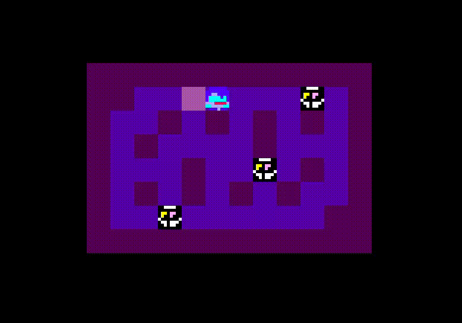
Final outcome of the game in VGA Playground
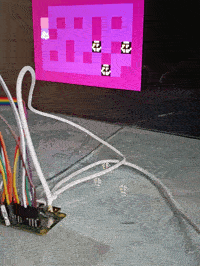
Game running on FPGA (Courtesy of Clém!! Thank you so much!)
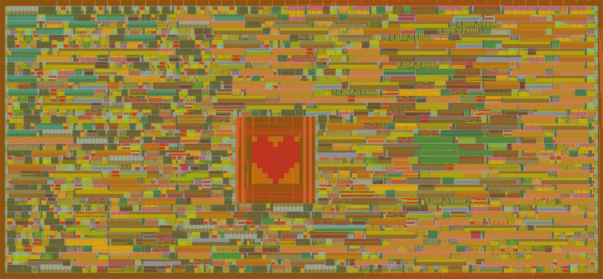
Picture of the chip! Featuring da SOUL
ok but how did i make it exactly?
le learning
First i followed the resources section from the hack club asic website to learn Verilog, the language that would allow me to write scripts to make this very cool chip. Basically I went to this website that had a buncha questions and just did them. There was also another website that i read but i had no clue what it was saying. But after finishing like half of it I decided that it was too boring and just started to make the chip. because [insert this picture my friend once sent me]
.png)
The picture.
making
I used VGA Playground to make the thingy. Basically you could write code there and test it immediately. very cool. I decided what my version of it should include, which is basically just:
- you can walk
- you can stabby stab some image friends (to clarify, these are the cats with pink and yellow eyes)
- eram, maybe
this is how the original game looked like. (Of course, I'd say that the thing I made looked nothing like it)
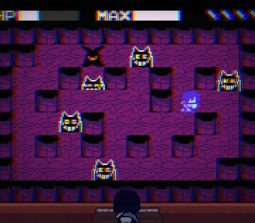
Picture of the thing I was recreating.
I wasn't so sure what was actually possible to fit on the thing (well this was my first time) so I consulted dear google search AI (probably a bad idea i know). following our not very smart discussion, I ended up deciding that I'd make the map accurate to the game which is 12x8, have 8x8 sprites for characters, and each 'tile' would be 32x32 on screen pixels. cool. i also ended up dropping eram. I named the project 'walking simulator ft. IMAGE_FRIEND (Deltarune ch. 3)'
i started by understanding how to draw a square in this vga playground. so, from my understanding, there's pix_x and pix_y, which is the position of the pixel on the screen. you can tell it what color to show on that pixel. and well it just goes from there.
the first thing i tried was to draw a rectangle, which was the 'game screen', as mentioned above, i did some math and figured out the numbers for a 384x256 rectangle centered on a 640x480 screen. in_screen just checks if pix_x and pix_y is in those boundaries:
wire in_screen = (pix_x >= 10'd128) && (pix_x < 10'd512) && (pix_y >= 10'd112) && (pix_y < 10'd368);
and then sets the pixel color
reg [5:0] pixel_color;
always @(*) begin
if (!video_active)
pixel_color = 6'b00_00_00;
else if (in_screen)
pixel_color = 6'b01_00_10;
else
pixel_color = 6'b00_00_00;
end
then R G B is set from pixel_color
assign R = pixel_color[5:4];
assign G = pixel_color[3:2];
assign B = pixel_color[1:0];
which would be outputted to the TinyVGA PMOD
assign uo_out = {hsync, B[0], G[0], R[0], vsync, B[1], G[1], R[1]};
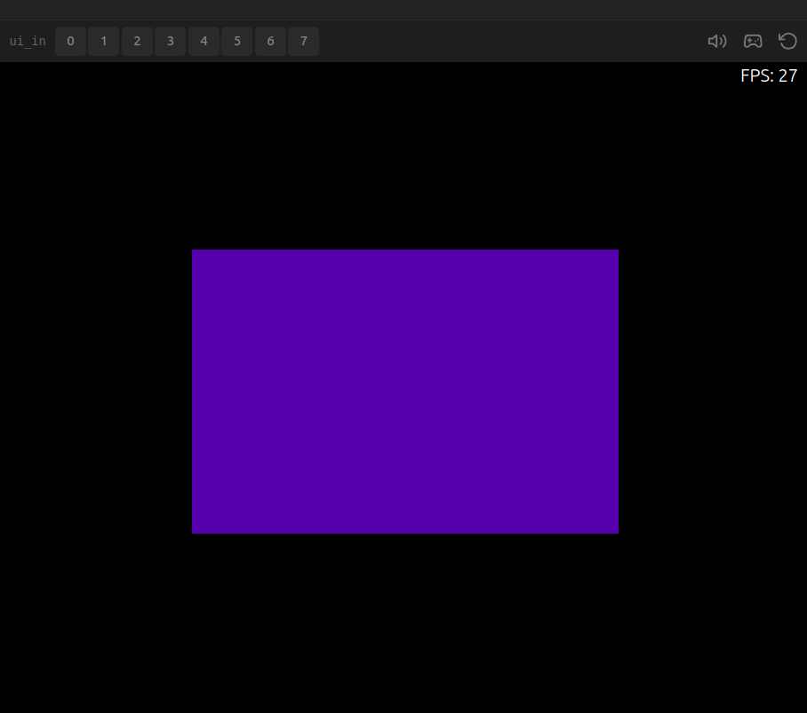
Wow! a purple rectangle!
so yeah that's more or less how it works. the rest is basically built upon this, with more 'flags' like in_screen but for the tiles, characters and enemies.
fun stuff (characters)
i'm pretty sure the original characters were 16x16 so i had to scale em down to 8x8. so I did that in aseprite. there's actually a limited amount of colors this can output, so I used https://www.1728.org/64colorsrow.htm to see my avaiable options. which was actually a lot.
I choose the colors that are most similar to the original based on their actual values I colorpicked and/or gut feeling. the closest color might not be the one that looks 'right', so it was quite fun to tune around abit and see what fits. and like here's the stuff corresponding to the values (i think)
00: 00
55: 01
AA: 10
FF: 11
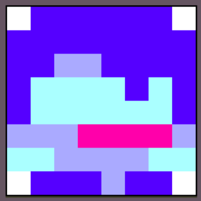
8-bit Kris in Aseprite (i ended up using another shade of cyan)
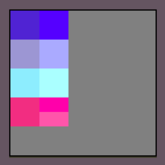
Me picking colors! Left is colorpicked from screenshot.
and wow! we have.. something! since every sprite had like more than 4 colors (if you include like transparent pixels), the color of each pixel is stored as a 3-bit value.
case (kris_color_r)
3'b001: pixel_color = 6'b01_00_11;
3'b010: pixel_color = 6'b10_10_11;
3'b011: pixel_color = 6'b00_11_11;
3'b100: pixel_color = 6'b11_00_01;
default: pixel_color = 6'b00_00_00;
endcase
repeat again for IMAGE_FRIEND, and we're done.....!
gah gah gah gah buttons
so there's actually this thing called gamepad pmod but I'm lwk not sure if i could even get one + the console in the first place, so i'm making my own stupid console. I had no clue how to implement it at first but i heard ja need a debouncer script for tactile buttons so i stole it from somewhere online (here) so basically we have 5 buttons, Up/Down/Left/Right/Action that just map to ui_in 0 to 4
i will somehow make the gamepad myself (and I actually have a kinda cool case design idea). the buttons would be active low, which means that it is 0 when pressed and 1 when normal. when testing my project on VGA playground, i use an input mapper and just spam my keys.
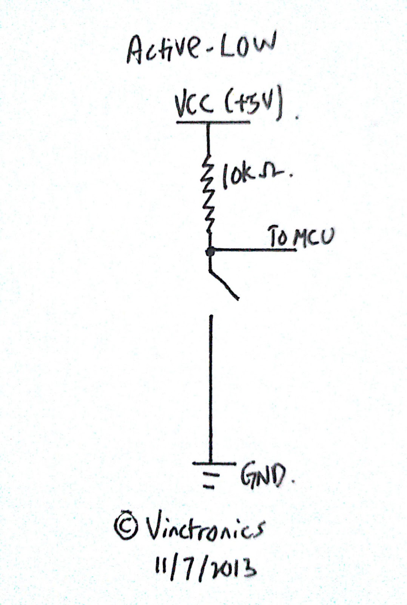
Schematic of active low button from somewhere on the internet
i also did some research on how to make a d-pad like the one you see on controllers. apparently someone did it by putting a pyramid/wedge thing in the middle of the 4 buttons, so i'll do that as well. i also found these soft tactile buttons that i might use.
ja.. input!
originally, i had like 5 debouncer instances, but (see optimization section below) google ai taught me that i could actually just have one and save space. i did not really think of that before. anyways, the debouncer module basically just makes the output 1/true when the button is released.
wire [4:0] btns;
debouncer all (clk, rst_n, ui_in[4:0], btns);
wire up = btns[0];
wire down = btns[1];
wire left = btns[2];
wire right = btns[3];
wire x = btns[4];
we store the x and y of kris. they can be anywhere in the 12x8 map which means those values can be 0-11 or 0-7. so x is 4 bits while y is 3 bits. to add collision so our dear kris doesn't phase into walls, we first put their expected location into next_x and next_y based on what they pressed
next_x = kris_x;
next_y = kris_y;
next_dir = last_dir;
if (up) begin
next_y = kris_y + 3'd1;
next_dir = 2'b00;
end else if (down) begin
next_y = kris_y - 3'd1;
next_dir = 2'b01;
end else if (left) begin
next_x = kris_x - 4'd1;
next_dir = 2'b10;
end else if (right) begin
next_x = kris_x + 4'd1;
next_dir = 2'b11;
end
then, we check for is_wall, which is kinda just the same thing we use to check if we should draw the tile in the pixel. and if the position they want to go is not a wall, we move them there.
if (!is_wall) begin
kris_x <= next_x;
kris_y <= next_y;
last_dir <= next_dir;
end
IMAGE_FRIEND
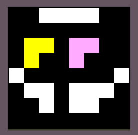
8-bit FRIEND in Aseprite
oh well.. ze image friend. I actually have no clue how I was gonna make it move, but well.. here it is! I originally wanted it to chase kris but i have no clue how to do it so now its super predictable. basically, each of them has a 'direction' which changes when they were to hit a wall. though eventually, they move into a 'stable' state where they all just move along a specific path. which is, kinda weird but whatever. There are 3 friend characters and they all have different ways to change their directions to make sure they don't eventually just follow each other and stuff. they also have different initial starting positions and directions.
these are how the movement is determined based on the 'direction'. its the same for all friends.
case (friend_dir_1)
2'b00: fn_y_1 = friend_y_1 + 3'd1;
2'b01: fn_y_1 = friend_y_1 - 3'd1;
2'b10: fn_x_1 = friend_x_1 - 4'd1;
2'b11: fn_x_1 = friend_x_1 + 4'd1;
endcase
here are the lines extracted from the code, where the friends change direction
friend_dir_1 <= friend_dir_1 + 2'b01;
friend_dir_2 <= friend_dir_2 - 2'b01;
friend_dir_3 <= friend_dir_3 + 2'b10;
friend 3 actually never moves vertically.
stabbing friends at the correct time can also make some interesting things, like 3 friends lined up together.
huh stabbing friends!?!?
after each sucessful move, the direction is stored. the direction you go to basically determine where you hit. maybe its kinda stupid but well i guess it works. target x/y are the coordinates of the place your attack will land, and after x/y would be same as the place kris would be after checking for is_wall.
always @(*) begin
target_x = after_x;
target_y = after_y;
case (next_dir)
2'b00: target_y = after_y + 3'd1;
2'b01: target_y = after_y - 3'd1;
2'b10: target_x = after_x - 4'd1;
2'b11: target_x = after_x + 4'd1;
endcase
end
we can check if we hit a friend when x is pressed and the target coordinates matches the friend's coordinates.
wire hit_f1 = (x && (target_x == friend_x_1) && (target_y == friend_y_1)) || (show_slct && (slct_x == friend_x_1) && (slct_y == friend_y_1));
show_slct is added so that the hit would last longer. a tick for this game happens every 12500000 clock cycles. slash_timer is used to make the attack work until the next pulse
reg slash_timer;
wire show_slct = (slash_timer != 1'd0);
always @(posedge clk or negedge rst_n) begin
if (!rst_n) begin
...
end else begin
...
if (x) begin
slash_timer <= 1'd1;
end else if (tickki && (slash_timer != 1'd0)) begin
slash_timer <= 1'd0;
end
end
end
optimization
so I ran the generate gds thing and realized that it wasn't actually gonna fit. I had friggin no clue on how to fix it and i was so desprate I asked google search ai... again. skull. then uhhjh and then it pointed out how stupid and inefficient my code was. so according to its suggestion I removed some things and made the stuff share a single instance (eg the characters and buttons). which like i didn't know you could do that.
it also did some things that i literally don't know how it worked. (gasp) but IT WORKED. its like, i have no clue why or how it worked, but it worked just like how it worked before. !!! gasp gasp gasp!!! the thing i understood was something like, my previous script was doing too much in one clock cycle. i hope my understanding was correct.
so I added some silicon art. and then it broke. oh shittings.
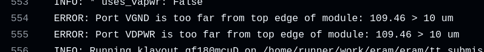
despair.
silicon art!
so, i followed https://tinytapeout.com/guides/creating-silicon-art to add the soul image in my chip. it was... an interesting process. the guide was pretty good at explaining some of the stuff such as how to make the art but it didn't really say how to add it for GF180 shuttles. and I couldn't exactly find a tutorial specifically for that so I just tried till it worked.
the art was a 9x9 pixelart of the SOUL from deltarune. because i felt like it was kinda badass to add that as silicon art. at first i drew it in aseprite and then manually inserted the points to a python script (see below) as a polygon. at the end, each pixel were 3um big so i multiplied everything by 3. at some point i also realized that i had made it upside down- as i thought 0,0 started from the top left.
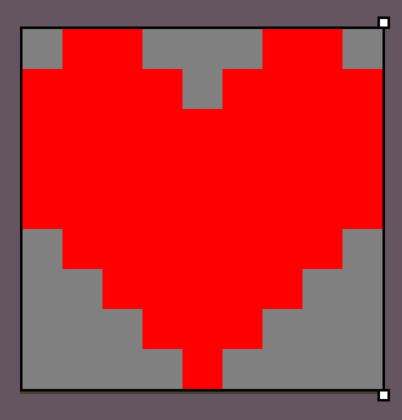
the soul. in aseprite.
originally, the pixels were actually 6um by 6um, so after adding the art, it failed because it was too big. it was only after that i changed the size of the pixels to a smaller size.
also i kept getting these errors from the precheck workflow
ERROR: Port VGND is too far from top edge of module: 109.46 > 10 um
ERROR: Port VDPWR is too far from top edge of module: 109.46 > 10 um
thing is, I had no clue why they were happening and how to fix them. i tried to make the art even smaller, put it on other layers... and eventually, something worked.
gah. at last, i moved the art to Metal3 and its position to 145, 55 and it SOMEHOW WORKED. well dear google search ai... you can have my thanks for that cuz i jenuinely would not have figured that out. i did not even understand the logic behind it. bruh.
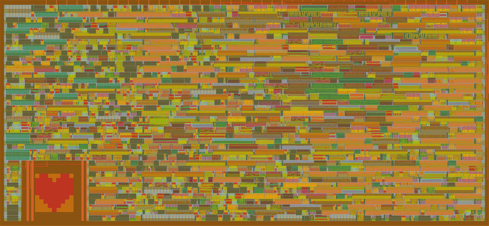
the old location of the heart that didn't work
other than that, the workflow to make the fpga bitstream kept failing because of the art. apparently i had to wrap the things in project.v with these:
`ifdef ASIC
(* blackbox *) (* keep *)
module soul ();
endmodule
`endif
and
`ifdef ASIC
(* keep *)
soul logo ();
`endif
and add this to config.json
"VERILOG_DEFINES": [
"ASIC"
]
at the end, this was my script to make the art.
import gdstk
CELL_NAME = "soul"
# bweeh i have no clue how this workies (skulk)
ART_LAYER, ART_DATATYPE = 42, 0 # Metal3
BOUNDARY_LAYER, BOUNDARY_DATATYPE = 0, 0
def write_lef(filename, cell_name, bounds):
"""Write a minimal LEF file with Metal4 obstruction. bounds = (xmin, ymin, xmax, ymax)."""
width = bounds[2] - bounds[0]
height = bounds[3] - bounds[1]
with open(filename, "w") as f:
f.write(f"# LEF file generated for {cell_name}\n")
f.write("VERSION 5.8 ;\n")
f.write("NAMESCASESENSITIVE ON ;\n")
f.write("DIVIDERCHAR \"/\" ;\n")
f.write("BUSBITCHARS \"[]\" ;\n")
f.write("UNITS\n")
f.write(" DATABASE MICRONS 1000 ;\n")
f.write("END UNITS\n\n")
f.write(f"MACRO {cell_name}\n")
f.write(" CLASS BLOCK ;\n")
f.write(f" FOREIGN {cell_name} 0 0 ;\n")
f.write(f" SIZE {width:.3f} BY {height:.3f} ;\n")
f.write(" SYMMETRY X Y ;\n")
f.write(" OBS\n")
f.write(" LAYER Metal3 ;\n")
f.write(f" RECT {bounds[0]:.3f} {bounds[1]:.3f} {bounds[2]:.3f} {bounds[3]:.3f} ;\n")
f.write(" END\n")
f.write(f"END {cell_name}\n")
lib = gdstk.Library()
cell = lib.new_cell(CELL_NAME)
cell_width, cell_height = 27, 27
# PR boundary — required for macro placement
cell.add(gdstk.rectangle(
(0, 0), (cell_width, cell_height),
layer=BOUNDARY_LAYER, datatype=BOUNDARY_DATATYPE,
))
points = [(0, 24), (3, 24), (3, 27), (9, 27), (9, 24), (12, 24), (12, 21), (15, 21), (15, 24), (18, 24), (18, 27), (24, 27), (24, 24), (27, 24), (27, 12), (24, 12), (24, 9), (21, 9), (21, 6), (18, 6), (18, 3), (15, 3), (15, 0), (12, 0), (12, 3), (9, 3), (9, 6), (6, 6), (6, 9), (3, 9), (3, 12), (0, 12)]
poly = gdstk.Polygon(points, layer=ART_LAYER, datatype=ART_DATATYPE)
# Simple art: one met4 rectangle
cell.add(poly)
cell.write_svg("../macros/soul.svg")
lib.write_gds("../macros/soul.gds")
bounds = (0, 0, cell_width, cell_height)
write_lef("../macros/soul.lef", CELL_NAME, bounds)
reflection
well, i kinda did what i wanted, but maybe i was too focused to want to make it done I used dear google search ai wayyy to much than I wished. it helped me fix the 29384579384 bugs and i guess it sorta provided me some idea on how to start this project in the first place, and how to implement things like pixel art (and to fix the weird bugs that i genuinely wouldn't have figured out, like once my sprites only showed the 3 columns of pixels on the right. i figured out what was causing it, but i couldn't find why)
oh hey at least i made something. i sure hope no one goes like 'yo remember the time you were so obsessed with deltarune you recreated that eram fight thing!?!' a couple years later.
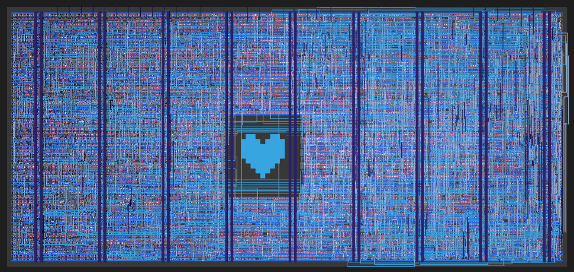
blue,,, heart